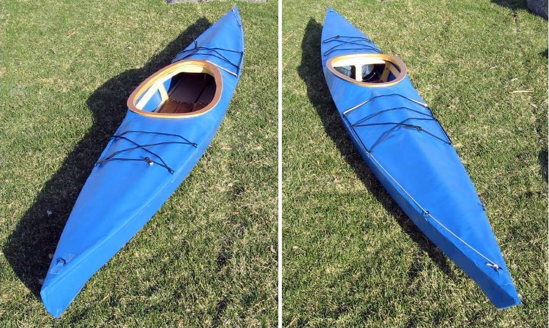

| (New) Sea Otter-R by Yves Papillon (CA) | Menu Previous Page Next Page |
|
 Yves, from Saint Lambert, Province of Quebec, recently completed a wood frame Sea Otter R (15). Frame is pine stringers over birch plywood cross sections. Stringers were ripped from 1x2 stock 8 foot and scarfed. All stringer to cross section connections are epoxied and screwed. The plywood coaming is covered with a ¼ inch marine plywood lip. Construction time was about 75 hours. |
|